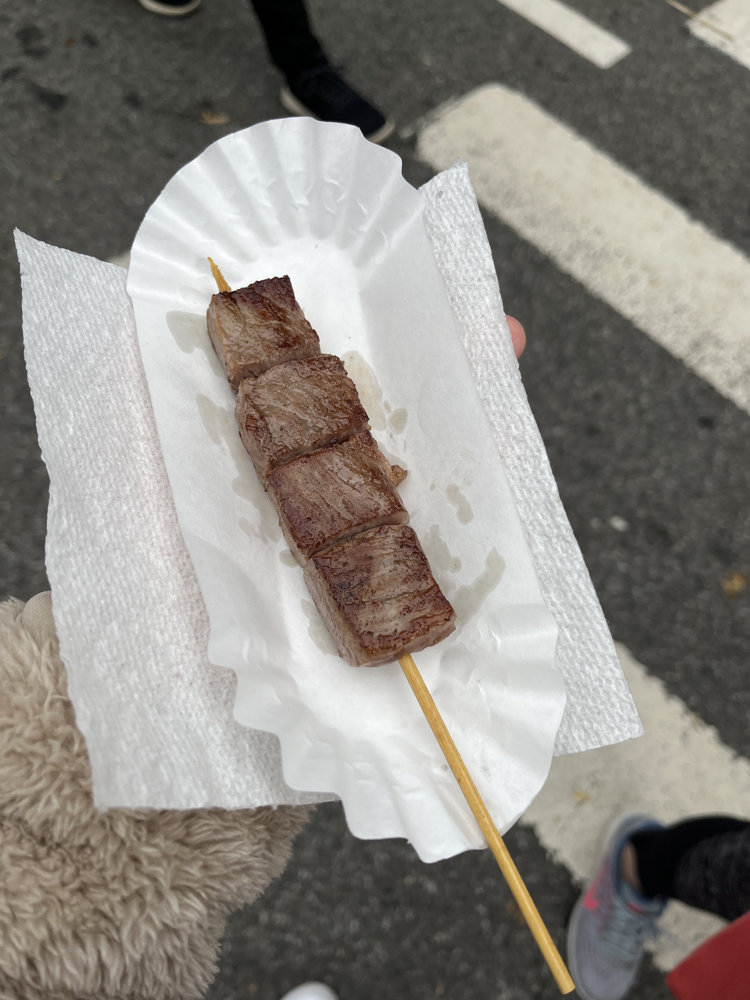

Premium Lobster Miso Ramen
Overall, the ramen was pretty good. The favors were there and everything. But, I would say the lobster soup was a bit too salty for me. That dropped it a star. Other than that, I can see why this vendor had one of the longest line.
Overall, the ramen was pretty good. The favors were there and everything. But, I would say the lobster soup was a bit too salty for me. That dropped it a star. Other than that, I can see why this vendor had one of the longest line.
Osaka Takoyaki
One of the best takoyaki I've ever had. Super flavorful. Made with fresh ingredients. And, overall, delicious -- a quality product that is definitely worth the wait.
One of the best takoyaki I've ever had. Super flavorful. Made with fresh ingredients. And, overall, delicious -- a quality product that is definitely worth the wait.
Brown Sugar Milk Tea
The drink tasted like expected -- like any other brown sugar milk tea. Maybe a tad bit of too much sugar but I didn't really mind, as it still taste good.
The drink tasted like expected -- like any other brown sugar milk tea. Maybe a tad bit of too much sugar but I didn't really mind, as it still taste good.

Wagyu Beef Skewer
Ok... where do I start off? First off, out of all the food I bought, this might be the most overpriced one. Around $20 for 1 skewer (4 pieces). Basically, $5 per bite. Wallet was crying. Because it was so expensive, I expected to taste the best beef I've ever had in my life to make this purchase worth it. Unfortunately, it was mid at best. The wagyu melted in your mouth but the flavor just tasted like butter.
Ok... where do I start off? First off, out of all the food I bought, this might be the most overpriced one. Around $20 for 1 skewer (4 pieces). Basically, $5 per bite. Wallet was crying. Because it was so expensive, I expected to taste the best beef I've ever had in my life to make this purchase worth it. Unfortunately, it was mid at best. The wagyu melted in your mouth but the flavor just tasted like butter.
Matcha Mochi Croissant Cube
The matcha and mochi tasted pretty good. The reason why I dropped the star was because the croissant was a brick. Because it was pre-baked and placed outside the for visuals (plus the cold weather), the croissant was not soft to bite into at all.
The matcha and mochi tasted pretty good. The reason why I dropped the star was because the croissant was a brick. Because it was pre-baked and placed outside the for visuals (plus the cold weather), the croissant was not soft to bite into at all.

Strawberry Tanghulu
You can't go wrong with tanghulu. The strawberry was very fresh and big with a light coating of sugar. A good way to end my trip at this festival.
You can't go wrong with tanghulu. The strawberry was very fresh and big with a light coating of sugar. A good way to end my trip at this festival.